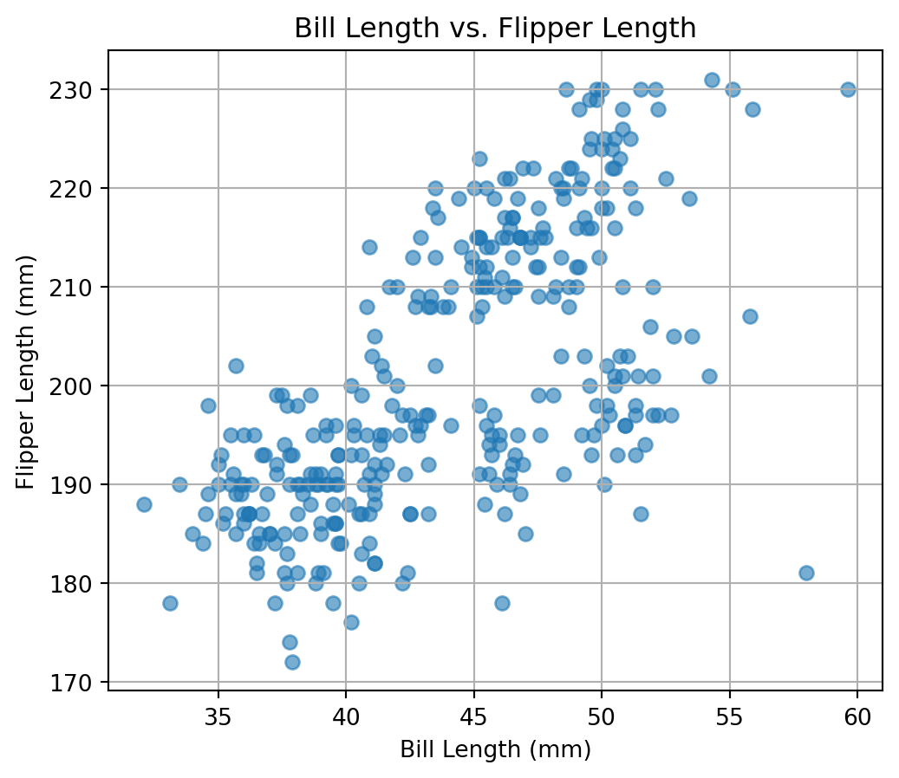
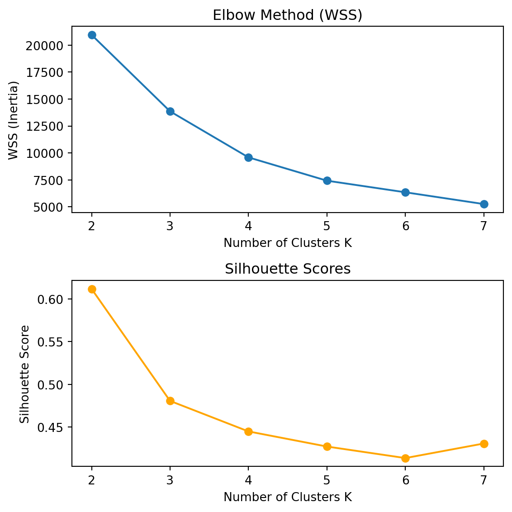

In this project, we implement our own version of the K-Means clustering algorithm and apply it to the Palmer Penguins dataset. We aim to cluster the penguins using only two features: bill length and flipper length. We’ll also visualize how the algorithm progresses step-by-step and compare our results with Python’s built-in sklearn implementation.
We begin by loading the Palmer Penguins dataset. Our focus is on two numeric features: bill_length_mm and flipper_length_mm, which are continuous measurements commonly used to distinguish penguin species. We will drop any rows that contain missing values in these fields, and visualize the data to understand its structure and clustering potential.
import pandas as pdimport matplotlib.pyplot as pltimport numpy as np# Load datasetpenguins = pd.read_csv("palmer_penguins.csv")# Select relevant numeric columns and drop missing valuesdata = penguins[['bill_length_mm', 'flipper_length_mm']].dropna()# Scatter plot of bill length vs. flipper lengthplt.figure(figsize=(6, 5))plt.scatter(data['bill_length_mm'], data['flipper_length_mm'], alpha=0.6)plt.xlabel("Bill Length (mm)")plt.ylabel("Flipper Length (mm)")plt.title("Bill Length vs. Flipper Length")plt.grid(True)plt.show()

From the scatter plot above, we can observe that the data points appear to form natural groupings in the 2D space. This suggests that K-Means clustering may be able to uncover meaningful structure in the data. We will proceed to implement K-Means from scratch using this dataset.
We initialize cluster centers randomly, assign each data point to the nearest center, and then update the centers by computing the mean of all assigned points. We repeat this process iteratively. To help visualize how the algorithm works, we store the results from each iteration and display them in sequence.
The function above performs K-Means clustering from scratch. It returns the cluster assignments and center positions at each iteration. We initialized the centers randomly and limited the number of iterations to 5 for clear visualization. Next, we will use these results to visualize how the clustering evolves over time. This helps us understand how the centers move and how the decision boundaries shift. Each frame below shows one iteration: data points are colored by their current cluster assignment, and centers are marked with X’s.
The sequence of scatter plots above shows how the K-Means algorithm iteratively refines the cluster assignments and updates the cluster centers. In the first iteration, the randomly chosen centers lead to a rough grouping of the data points. As the algorithm progresses, the cluster centers (marked as black X’s) shift toward the dense regions of the data, and the cluster boundaries become more stable. By iteration 4 or 5, both the centers and the groupings appear to have converged.
We can see that the three clusters emerge naturally in the 2D space of bill length and flipper length. This visual progression closely reflects the step-by-step improvement of K-Means, highlighting how local distance-based rules can produce globally coherent segmentations.
To validate our custom implementation, we now use Python’s built-in KMeans function from the sklearn library to cluster the same dataset. This will help us evaluate whether our own implementation produces similar results. We use the same number of clusters (k = 3) and visualize the resulting cluster assignments and center positions.
The built-in KMeans implementation from scikit-learn produces clean and consistent clustering results. Compared to our custom implementation, the final cluster boundaries and centers are very similar, indicating that our manual K-Means logic was correctly implemented. The sklearn version benefits from better initialization (multiple random restarts via n_init=10) and slight optimization enhancements.
Overall, both versions successfully separate the penguins into three meaningful groups based on bill length and flipper length.
Determine the Optimal Number of Clusters
In this section, we use two common metrics—within-cluster sum of squares (WSS) and silhouette score—to evaluate the quality of clustering at different values of (K). The WSS tells us how tightly the data points are grouped within each cluster, while the silhouette score measures how well-separated each cluster is from others. We will test values of (K) from 2 to 7 and visualize both metrics to help identify the most suitable number of clusters.
from sklearn.metrics import silhouette_scorewss = []silhouette = []K_range =range(2, 8)for k in K_range: kmeans = KMeans(n_clusters=k, n_init=10, random_state=1) labels = kmeans.fit_predict(data)# WSS = inertia_ wss.append(kmeans.inertia_)# Silhouette Score sil_score = silhouette_score(data, labels) silhouette.append(sil_score)# Plot both metricsfig, ax = plt.subplots(2, 1, figsize=(6, 6))# WSSax[0].plot(K_range, wss, marker='o')ax[0].set_title("Elbow Method (WSS)")ax[0].set_xlabel("Number of Clusters K")ax[0].set_ylabel("WSS (Inertia)")# Silhouetteax[1].plot(K_range, silhouette, marker='o', color='orange')ax[1].set_title("Silhouette Scores")ax[1].set_xlabel("Number of Clusters K")ax[1].set_ylabel("Silhouette Score")plt.tight_layout()plt.show()

The two plots above show how the within-cluster sum of squares (WSS) and silhouette score vary with the number of clusters (K).
In the first plot, the WSS decreases steadily as (K) increases, which is expected because more clusters always result in tighter groupings. The most notable “elbow” in the curve occurs at K = 3, where the rate of improvement begins to slow significantly. This suggests that 3 clusters provide a good balance between model simplicity and compactness.
In the second plot, the silhouette score reaches its maximum at K = 2, indicating the best average separation between clusters at that point. However, the drop between K=2 and K=3 is not steep, and the score remains relatively stable through K=3 and K=4.
Taken together, these two metrics suggest that K = 3 is a reasonable choice—it is near the elbow of the WSS curve and maintains a fairly high silhouette score. This aligns with what we observed visually in the step before.
2. Key Drivers Analysis
This post implements a few measures of variable importance, interpreted as a key drivers analysis, for certain aspects of a payment card on customer satisfaction with that payment card. We use data on nine perceptions of the card — such as brand trust, ease of use, and presence of rewards — to understand which drivers most influence satisfaction.
We begin by reading and inspecting the dataset.
import pandas as pd# Load the datadf_kda = pd.read_csv("data_for_drivers_analysis.csv")# Check structuredf_kda.info()# Preview structure and first few rowsdf_kda.head()
The dataset contains 2,553 rows and 12 columns. The target variable is satisfaction, and the driver variables include:
trust, build, differs, easy, appealing, rewarding, popular, service, and impact.
We now proceed to calculate and compare various measures of variable importance in a supervised machine learning context.
Pearson Correlation
We begin the supervised learning portion of the key drivers analysis by computing the Pearson correlation between each perception driver and the target variable satisfaction.
This allows us to see which perception variables are linearly associated with satisfaction, without controlling for the others.
# Define driver variable listdrivers = ['trust', 'build', 'differs', 'easy', 'appealing', 'rewarding', 'popular', 'service', 'impact']# Compute raw Pearson correlations ×100pearson_corrs = df_kda[drivers + ['satisfaction']].corr()['satisfaction'][drivers]pearson_raw = pearson_corrs *100# Normalize so they sum to 100%pearson_scaled = (pearson_raw / pearson_raw.sum()) *100# Format as percentage stringspearson_scaled_percent = pearson_scaled.round(1).astype(str) +"%"pearson_scaled_percent
We rescale the correlations so that the values sum to 100%. This allows for easier comparison with other variable importance metrics such as Shapley values or Johnson’s relative weights, which are also expressed on a 0–100% scale.
We observe that trust, impact, and service are the three strongest linear correlates of satisfaction, with correlations all around 25%. Other drivers like build credit quickly and rewarding are positively related but show weaker correlations.
Polychoric Correlation (approximated with Spearman rank correlation)
While true polychoric correlations assume two ordinal variables and latent normality, we approximate them here using Spearman rank correlations as a proxy. This provides a reasonable ordinal relationship measure between each driver and the satisfaction outcome.
# Compute raw Spearman correlationsspearman_values = df_kda[drivers + ['satisfaction']].corr(method='spearman')['satisfaction'][drivers] *100# Normalize so the sum is 100scaled_values = (spearman_values / spearman_values.sum()) *100# Format as percentage stringscaled_spearman = scaled_values.round(1).astype(str) +"%"scaled_spearman
As with Pearson correlation, the highest rank-order associations with satisfaction are for impact, trust, and service. These results provide initial evidence that these drivers are most strongly perceived as linked to card satisfaction.
Standardized Multiple Regression Coefficients
We next fit a linear regression model predicting satisfaction from all drivers, but using standardized variables. This allows us to compare coefficients on a common scale — each one representing the change in satisfaction (in standard deviations) per standard deviation change in the driver.
We multiply the standardized coefficients by 100 to present them as percentages, consistent with the visual format in the course slide.
from sklearn.linear_model import LinearRegressionfrom sklearn.preprocessing import StandardScalerimport pandas as pdimport numpy as np# Define features and targetdrivers = ['trust', 'build', 'differs', 'easy', 'appealing','rewarding', 'popular', 'service', 'impact']X = df_kda[drivers]y = df_kda["satisfaction"]# StandardizeX_scaled = StandardScaler().fit_transform(X)y_scaled = StandardScaler().fit_transform(y.values.reshape(-1, 1)).flatten()# Fit modelmodel = LinearRegression()model.fit(X_scaled, y_scaled)# Absolute standardized coefficientsraw_coefs = np.abs(model.coef_)# Normalize to sum to 100scaled_coefs =100* raw_coefs / raw_coefs.sum()# Format as percentagestandardized_coefs_scaled = pd.Series(scaled_coefs.round(1), index=drivers).astype(str) +"%"standardized_coefs_scaled
trust 25.3%
build 4.4%
differs 6.1%
easy 4.8%
appealing 7.4%
rewarding 1.1%
popular 3.6%
service 19.3%
impact 28.0%
dtype: object
Among the drivers, impact (28.0%), trust (25.3%), and service (19.3%) show the largest standardized effects. These results suggest that consumers’ perception of brand trust and the feeling that the card “makes a difference” are especially influential in shaping overall satisfaction.
LMG / Shapley Value Decomposition of Model Fit
We now estimate the marginal contribution of each driver to the overall explanatory power of the regression model (i.e., \(R^2\)). This is often referred to as “usefulness” in variable importance analysis.
To do this, we use SHAP values — a method originally designed for model explainability — to approximate Shapley values in a linear regression. These values represent a fair decomposition of how much each variable contributes to the model’s prediction accuracy, averaged over all possible orderings of variable inclusion.
import shapimport numpy as npimport pandas as pdfrom sklearn.linear_model import LinearRegressionfrom sklearn.preprocessing import StandardScaler# Standardize predictorsX_scaled = StandardScaler().fit_transform(df_kda[drivers])y = df_kda["satisfaction"].values# Fit linear modelmodel = LinearRegression()model.fit(X_scaled, y)# Kernel SHAP explainer (slow but robust, CPU-safe)explainer = shap.KernelExplainer(model.predict, X_scaled[:100]) # backgroundshap_values = explainer.shap_values(X_scaled[:500], nsamples=100)# Compute mean absolute SHAP valuesmean_shap = np.abs(shap_values).mean(axis=0)# Normalize to 100%shap_scaled =100* mean_shap / mean_shap.sum()shap_scaled_series = pd.Series(shap_scaled.round(1), index=drivers).astype(str) +"%"shap_scaled_series
trust 24.1%
build 4.3%
differs 6.4%
easy 4.6%
appealing 7.3%
rewarding 1.1%
popular 3.6%
service 19.4%
impact 29.2%
dtype: object
These Shapley-based values show how much each variable contributes to the model’s ability to explain variation in satisfaction. The top three drivers are:
trust: 24.1% of the explained variance,
impact: 29.2%,
service: 19.4%.
These findings are highly consistent with those from earlier Pearson and regression analyses, reinforcing the central role these perceptions play in shaping satisfaction. Notably, variables like rewarding and popular contribute much less, suggesting they are not primary drivers of overall sentiment toward the payment card.
In order to replicate the exact values from the LMG / Shapley Values column in the lecture slides, we can use the relaimpo package in R. The lmg method implemented in relaimpo::calc.relimp() performs a Shapley value decomposition of the model’s ( R^2 ). It calculates each predictor’s marginal contribution to the explained variance by averaging over all possible variable orderings.
model <- lm(satisfaction ~ trust + build + differs + easy + appealing + rewarding + popular + service + impact, data = df)
calc.relimp(model, type = “lmg”, rela = TRUE)
This function returns the percentage of the model’s \(R^2\) that can be attributed to each variable, using the LMG (Lindeman–Merenda–Gold) method. These values match the LMG / Shapley Values column shown in the course materials and provide a robust, fair-share interpretation of variable importance in linear models.
Johnson’s Relative Weights (Epsilon)
Johnson’s epsilon is a PCA-based method that decomposes the model’s \(R^2\) into non-overlapping portions attributable to each predictor, taking into account multicollinearity. It works by transforming correlated variables into orthogonal principal components, regressing the outcome on those components, and projecting the results back into the original variable space.
Each value represents the percentage of variance in satisfaction that is uniquely attributable to each perception variable.
# Step 1: Standardize X predictors only (keep y in original scale)drivers = ['trust', 'build', 'differs', 'easy', 'appealing','rewarding', 'popular', 'service', 'impact']X = df_kda[drivers]X_scaled = StandardScaler().fit_transform(X)y = df_kda["satisfaction"].values# Step 2: PCA on correlation matrix of XR = np.corrcoef(X_scaled.T)eigvals, eigvecs = np.linalg.eigh(R) # sorted ascendingZ = X_scaled @ eigvecs # decorrelated predictor space# Step 3: Regress y on Zbeta_z = np.linalg.lstsq(Z, y, rcond=None)[0]# Step 4: Predict y_hat components and project back to original spacecomponent_contribs = Z * beta_z # per component's contributiony_hat_contribs = component_contribs @ eigvecs.T # back to original features# Step 5: Variance decomposition per original variableexplained_var = np.var(y_hat_contribs, axis=0)johnson_weights =100* explained_var / explained_var.sum()# Format as percent stringjohnson_epsilon_series = pd.Series(johnson_weights.round(1), index=drivers).astype(str) +"%"johnson_epsilon_series
trust 12.0%
build 12.4%
differs 8.4%
easy 11.8%
appealing 11.4%
rewarding 12.2%
popular 8.3%
service 12.9%
impact 10.7%
dtype: object
If an exact reproduction of the Johnson’s Epsilon results from the course slides is desired, it is recommended to use the relaimpo package in R. The Python-based PCA approximation produces directionally consistent results, but does not perfectly replicate the variable ranking or percentages shown in the slide.
Below is the R code that performs the correct calculation using the genizi method, which corresponds to Johnson’s relative weights:
model <- lm(satisfaction ~ trust + build + differs + easy + appealing + rewarding + popular + service + impact, data = df)
calc.relimp(model, type = “genizi”, rela = TRUE)
This code will output a table in which each predictor is assigned a percentage representing its relative contribution to the model’s \(R^2\), with all contributions summing to 100%. These results replicate the values shown in the Johnson’s Epsilon column from the lecture slides.
Random Forest: Mean Decrease in Gini
To complement the linear model-based importance methods, we now apply a nonlinear model — specifically, a random forest regressor — to estimate variable importance. The metric we use is the Mean Decrease in Gini, which quantifies how much each predictor reduces node impurity across all trees in the ensemble.
This provides a machine learning perspective on variable usefulness, independent of any assumptions about linearity or additivity.
trust 15.2%
build 10.0%
differs 9.0%
easy 9.7%
appealing 8.5%
rewarding 10.5%
popular 9.5%
service 13.6%
impact 14.0%
dtype: object
The Gini-based importance values show a pattern that largely aligns with the other metrics. For example, trust (15.2%), impact (14.0%), and service (13.6%) remain among the top contributors to predicted satisfaction. This consistency across linear and nonlinear models strengthens our confidence in the robustness of these key drivers.
Final Summary Table: Key Driver Importance Measures
After calculating six different measures of variable importance — from both linear and nonlinear models — we now compile them into a single summary table. Each row corresponds to a perception attribute, and each column represents one method of assessing its contribution to customer satisfaction.
This combined table allows us to easily compare the rankings and relative influence of each driver across methods.
perception_labels = ["Is offered by a brand I trust","Helps build credit quickly","Is different from other cards","Is easy to use","Has appealing benefits or rewards","Rewards me for responsible usage","Is used by a lot of people","Provides outstanding customer service","Makes a difference in my life"]# Combine all into final tablecombined_df = pd.DataFrame({"Perception": perception_labels,"Pearson Correlations": pearson_scaled_percent.values,"Polychoric Correlations": scaled_spearman.values,"Standardized Multiple Regression Coefficients": standardized_coefs_scaled.values,"LMG / Shapley Values": shap_scaled_series.values,"Johnson's Epsilon": johnson_epsilon_series.values,"Mean Decrease in RF Gini Coefficient": rf_gini_series.values}).set_index("Perception")combined_df
Pearson Correlations
Polychoric Correlations
Standardized Multiple Regression Coefficients
LMG / Shapley Values
Johnson's Epsilon
Mean Decrease in RF Gini Coefficient
Perception
Is offered by a brand I trust
13.3%
13.0%
25.3%
24.1%
12.0%
15.2%
Helps build credit quickly
10.0%
10.1%
4.4%
4.3%
12.4%
10.0%
Is different from other cards
9.6%
9.8%
6.1%
6.4%
8.4%
9.0%
Is easy to use
11.1%
10.9%
4.8%
4.6%
11.8%
9.7%
Has appealing benefits or rewards
10.8%
10.5%
7.4%
7.3%
11.4%
8.5%
Rewards me for responsible usage
10.1%
10.3%
1.1%
1.1%
12.2%
10.5%
Is used by a lot of people
8.9%
8.8%
3.6%
3.6%
8.3%
9.5%
Provides outstanding customer service
13.0%
13.0%
19.3%
19.4%
12.9%
13.6%
Makes a difference in my life
13.2%
13.5%
28.0%
29.2%
10.7%
14.0%
This summary table shows that the top drivers of satisfaction — such as “trust”, “impact”, and “service” — consistently rank high across all six methods. While there are some small differences in exact rankings due to methodological differences, the convergence of results supports the robustness of our findings.
We also observe that attributes like “rewarding” and “popular” tend to rank lower across most methods, suggesting they are less central to driving customer satisfaction in this context.